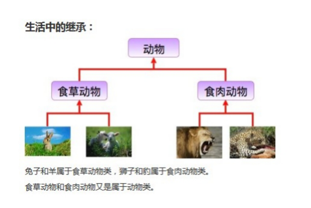
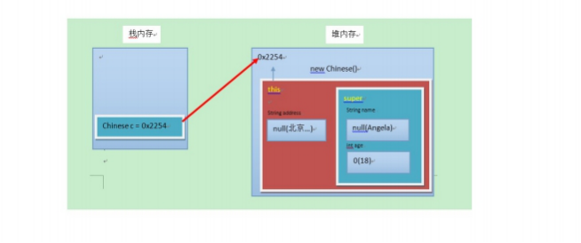
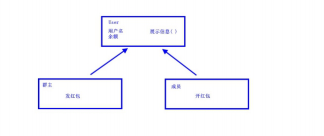

day09【继承、super、this、抽象类】今日内容教学目标第一章 继承1.1 概述由来定义好处1.2 继承的格式1.3 继承后的特点——成员变量成员变量不重名成员变量重名1.4 继承后的特点——成员方法成员方法不重名成员方法重名——重写(Override)重写的应用注意事项1.5 继承后的特点——构造方法1.6 super和this父类空间优先于子类对象产生super和this的含义super和this的用法1.7 继承的特点第二章 抽象类2.1 概述由来定义2.2 abstract使用格式抽象方法抽象类抽象的使用2.3 注意事项第三章 继承的综合案例3.1 综合案例：群主发普通红包3.2 案例分析3.3 案例实现
能够解释类名作为参数和返回值类型
能够写出类的继承格式
能够说出继承的特点
能够说出子类调用父类的成员特点
能够说出方法重写的概念
能够说出super可以解决的问题
描述抽象方法的概念
写出抽象类的格式
写出抽象方法的格式
能够说出父类抽象方法的存在意义
能够完成发红包案例的代码逻辑
多个类中存在相同属性和行为时，将这些内容抽取到单独一个类中，那么多个类无需再定义这些属性和行为，只要继承那一个类即可。如图所示：  其中，多个类可以称为子类，单独那一个类称为父类、超类（superclass）或者基类。 继承描述的是事物之间的所属关系，这种关系是： is-a 的关系。例如，图中兔子属于食草动物，食草动物属于动物。可见，父类更通用，子类更具体。我们通过继承，可以使多种事物之间形成一种关系体系。
1.提高代码的复用性。 2.类与类之间产生了关系，是多态的前提。
通过 extends 关键字，可以声明一个子类继承另外一个父类，定义格式如下：
class 父类 { ...} class 子类 extends 父类 { ...}继承演示，代码如下：
xxxxxxxxxx /* *定义员工类Employee，做为父类 */class Employee { String name; // 定义name属性 // 定义员工的工作方法 public void work() { System.out.println("尽心尽力地工作"); }} /* *定义讲师类Teacher 继承 员工类Employee */class Teacher extends Employee { // 定义一个打印name的方法 public void printName() { System.out.println("name=" + name); }} /* *定义测试类 */public class ExtendDemo01 { public static void main(String[] args) { // 创建一个讲师类对象 Teacher t = new Teacher (); // 为该员工类的name属性进行赋值 t.name = "小明"; // 调用该员工的printName()方法 t.printName(); // name = 小明 // 调用Teacher类继承来的work()方法 t.work(); // 尽心尽力地工作 }}当类之间产生了关系后，其中各类中的成员变量，又产生了哪些影响呢？
如果子类父类中出现不重名的成员变量，这时的访问是没有影响的。代码如下：
xxxxxxxxxxclass Fu { // Fu中的成员变量。 int num = 5;}class Zi extends Fu {// Zi中的成员变量 // Zi中的成员变量 int num2 = 6; // Zi中的成员方法 public void show() { // 访问父类中的num， System.out.println("Fu num="+num); // 继承而来，所以直接访问。 // 访问子类中的num2 System.out.println("Zi num2="+num2); }}class ExtendDemo02 { public static void main(String[] args) { // 创建子类对象 Zi z = new Zi(); // 调用子类中的show方法 z.show(); }} 演示结果：Fu num = 5Zi num2 = 6如果子类父类中出现重名的成员变量，这时的访问是有影响的。代码如下：
xxxxxxxxxxclass Fu { // Fu中的成员变量。 int num = 5;}class Zi extends Fu { // Zi中的成员变量 int num = 6; public void show() { // 访问父类中的num System.out.println("Fu num=" + num); // 访问子类中的num System.out.println("Zi num=" + num); }}class ExtendsDemo03 { public static void main(String[] args) { // 创建子类对象 Zi z = new Zi(); // 调用子类中的show方法 z.show(); }}演示结果：Fu num = 6Zi num = 6子父类中出现了同名的成员变量时，在子类中需要访问父类中非私有成员变量时，需要使用 super 关键字，修饰父类成员变量，类似于之前学过的 this 。 使用格式：
xxxxxxxxxx super.父类成员变量名子类方法需要修改，代码如下：
xxxxxxxxxx class Zi extends Fu { // Zi中的成员变量 int num = 6; public void show() { //访问父类中的num System.out.println("Fu num=" + super.num); //访问子类中的num System.out.println("Zi num=" + this.num); }}演示结果：Fu num = 5Zi num = 6小贴士：Fu 类中的成员变量是非私有的，子类中可以直接访问。若Fu 类中的成员变量私有了，子类是不能直接访问的。通常编码时，我们遵循封装的原则，使用private修饰成员变量，那么如何访问父类的私有成员变量呢？对！可以在父类中提供公共的getXxx方法和setXxx方法。
当类之间产生了关系，其中各类中的成员方法，又产生了哪些影响呢？
如果子类父类中出现不重名的成员方法，这时的调用是没有影响的。对象调用方法时，会先在子类中查找有没有对应的方法，若子类中存在就会执行子类中的方法，若子类中不存在就会执行父类中相应的方法。代码如下：
xxxxxxxxxx class Fu{ public void show(){ System.out.println("Fu类中的show方法执行"); }}class Zi extends Fu{ public void show2(){ System.out.println("Zi类中的show2方法执行"); }}public class ExtendsDemo04 { public static void main(String[] args) { Zi z = new Zi(); //子类中没有show方法，但是可以找到父类方法去执行z.show(); z.show(); z.show2(); }}如果子类父类中出现重名的成员方法，这时的访问是一种特殊情况，叫做方法重写 (Override)。 方法重写 ：子类中出现与父类一模一样的方法时（返回值类型，方法名和参数列表都相同），会出现覆盖效 果，也称为重写或者复写。声明不变，重新实现。 代码如下：
xxxxxxxxxx class Fu { public void show() { System.out.println("Fu show"); }}class Zi extends Fu { //子类重写了父类的show方法 public void show() { System.out.println("Zi show"); }}public class ExtendsDemo05{ public static void main(String[] args) { Zi z = new Zi(); // 子类中有show方法，只执行重写后的show方法 z.show(); // Zi show }}子类可以根据需要，定义特定于自己的行为。既沿袭了父类的功能名称，又根据子类的需要重新实现父类方法，从而进行扩展增强。比如新的手机增加来电显示头像的功能，代码如下：
xxxxxxxxxx class Phone { public void sendMessage(){ System.out.println("发短信"); } public void call(){ System.out.println("打电话"); } public void showNum(){ System.out.println("来电显示号码"); }} //智能手机类class NewPhone extends Phone { //重写父类的来电显示号码功能，并增加自己的显示姓名和图片功能 public void showNum(){ //调用父类已经存在的功能使用super super.showNum (); //增加自己特有显示姓名和图片功能 System.out.println("显示来电姓名"); System.out.println("显示头像"); }} public class ExtendsDemo06 { public static void main(String[] args) { // 创建子类对象 NewPhone np = new NewPhone()； // 调用父类继承而来的方法 np.call(); // 调用子类重写的方法 np.showNum (); }}小贴士：这里重写时，用到super.父类成员方法，表示调用父类的成员方法。
1.子类方法覆盖父类方法，必须要保证权限大于等于父类权限。 2.子类方法覆盖父类方法，返回值类型、函数名和参数列表都要一模一样。
当类之间产生了关系，其中各类中的构造方法，又产生了哪些影响呢？ 首先我们要回忆两个事情，构造方法的定义格式和作用。 1.构造方法的名字是与类名一致的。所以子类是无法继承父类构造方法的。 2.构造方法的作用是初始化成员变量的。所以子类的初始化过程中，必须先执行父类的初始化动作。子类的构 造方法中默认有一个 super() ，表示调用父类的构造方法，父类成员变量初始化后，才可以给子类使用。代 码如下：
xxxxxxxxxx class Fu { private int n; Fu(){ System.out.println ("Fu()"); }}class Zi extends Fu { Zi(){ // super （），调用父类构造方法 super(); System.out.println ("Zi（）"); } }public class ExtendsDemo07{ public static void main (String args[]){ Zi zi = new Zi(); }}输出结果：Fu（）Zi（）在每次创建子类对象时，先初始化父类空间，再创建其子类对象本身。目的在于子类对象中包含了其对应的父类空间，便可以包含其父类的成员，如果父类成员非private修饰，则子类可以随意使用父类成员。代码体现在子类的构造方法调用时，一定先调用父类的构造方法。理解图解如下： 
xxxxxxxxxxthis.成员变量 ‐‐ 本类的super.成员变量 ‐‐ 父类的 this.成员方法名() ‐‐ 本类的 super.成员方法名() ‐‐ 父类的用法演示，代码如下：
xxxxxxxxxx class Animal { public void eat() { System.out.println ("animal : eat"); }} class Cat extends Animal { public void eat() { System.out.println ("cat : eat"); } public void eatTest() { this.eat(); // this 调用本类的方法 super.eat(); // super 调用父类的方法 }} public class ExtendsDemo08 { public static void main(String[] args) { Animal a = new Animal(); a.eat(); Cat c = new Cat(); c.eatTest (); }} 输出结果为：animal : eatcat : eatanimal : eatxxxxxxxxxx this(...) ‐‐ 本类的构造方法super(...) ‐‐ 父类的构造方法子类的每个构造方法中均有默认的super()，调用父类的空参构造。手动调用父类构造会覆盖默认的super()。 super() 和 this() 都必须是在构造方法的第一行，所以不能同时出现。
xxxxxxxxxx//一个类只能有一个父类，不可以有多个父类。class C extends A{} //okclass C extends A，B... //errorxxxxxxxxxxclass A{}class B extends A{}class C extends B{}顶层父类是Object类。所有的类默认继承Object，作为父类。
父类中的方法，被它的子类们重写，子类各自的实现都不尽相同。那么父类的方法声明和方法主体，只有声明还有意义，而方法主体则没有存在的意义了。我们把没有方法主体的方法称为抽象方法。Java语法规定，包含抽象方法 的类就是抽象类。
使用 abstract 关键字修饰方法，该方法就成了抽象方法，抽象方法只包含一个方法名，而没有方法体。 定义格式：
xxxxxxxxxx 修饰符 abstract 返回值类型 方法名 (参数列表)；代码举例：
xxxxxxxxxx public abstract void run()；如果一个类包含抽象方法，那么该类必须是抽象类。 定义格式：
xxxxxxxxxx abstract class 类名字 { }代码举例：
xxxxxxxxxx public abstract class Animal { public abstract void run()；}继承抽象类的子类必须重写父类所有的抽象方法。否则，该子类也必须声明为抽象类。最终，必须有子类实现该父类的抽象方法，否则，从最初的父类到最终的子类都不能创建对象，失去意义。 代码举例：
xxxxxxxxxx public class Cat extends Animal { public void run (){ System.out.println ("小猫在墙头走~~~")； }} public class CatTest { public static void main(String[] args) { // 创建子类对象 Cat c = new Cat(); // 调用run方法 c.run(); }}输出结果：小猫在墙头走~~~此时的方法重写，是子类对父类抽象方法的完成实现，我们将这种方法重写的操作，也叫做实现方法。
关于抽象类的使用，以下为语法上要注意的细节，虽然条目较多，但若理解了抽象的本质，无需死记硬背。
理解：假设创建了抽象类的对象，调用抽象的方法，而抽象方法没有具体的方法体，没有意义。
理解：子类的构造方法中，有默认的super()，需要访问父类构造方法。
理解：未包含抽象方法的抽象类，目的就是不想让调用者创建该类对象，通常用于某些特殊的类结构设 计。
理解：假设不重写所有抽象方法，则类中可能包含抽象方法。那么创建对象后，调用抽象的方法，没有 意义。
群主发普通红包。某群有多名成员，群主给成员发普通红包。普通红包的规则： 1.群主的一笔金额，从群主余额中扣除，平均分成n等份，让成员领取。 2.成员领取红包后，保存到成员余额中。 请根据描述，完成案例中所有类的定义以及指定类之间的继承关系，并完成发红包的操作。
根据描述分析，得出如下继承体系： 
定义用户类：
xxxxxxxxxx public class User { // 成员变量 private String username ; // 用户名 private double leftMoney ; // 余额 // 构造方法 public User() { } public User(String username , double leftMoney) { this.username = username; this.leftMoney = leftMoney; } // get/set 方法 public String getUsername() { return username ; } public void setUsername (String username) { this.username = username; } public double getLeftMoney() { return leftMoney; } public void setLeftMoney (double leftMoney ) { this.leftMoney = leftMoney; } // 展示信息的方法 public void show() { System.out.println ("用户名:"+ username +" , 余额为:" + leftMoney + "元"); }}定义群主类：
xxxxxxxxxx public class QunZhu extends User { // 添加构造方法 public QunZhu() { } public QunZhu(String username, double leftMoney) { // 通过super 调用父类构造方法 super(username, leftMoney ); } /* 群主发红包，就是把一个整数的金额，分层若干等份。 1.获取群主余额,是否够发红包. 不能则返回null,并提示. 能则继续. 2.修改群主余额. 3.拆分红包. 3.1.如果能整除，那么就平均分。 3.2.如果不能整除，那么就把余数分给最后一份。 */ public ArrayList<Double> send(int money, int count) { // 获取群主余额 double leftMoney = getLeftMoney(); if(money > leftMoney ) { return null; } // 修改群主余额的 setLeftMoney(leftMoney ‐ money); // 创建一个集合,保存等份金额 ArrayList<Double> list = new ArrayList<>(); // 扩大100倍,相当于折算成'分'为单位,避免小数运算损失精度的问题 money = money * 100; // 每份的金额 int m = money / count; // 不能整除的余数 int l = money % count; // 无论是否整除,n‐1份,都是每份的等额金额 for (int i = 0;i < count ‐ 1; i++) { // 缩小100倍,折算成 '元' list.add(m / 100.0); } // 判断是否整除 if (l == 0) { // 能整除, 最后一份金额,与之前每份金额一致 list.add(m / 100.0); } else { // 不能整除, 最后一份的金额,是之前每份金额+余数金额 list.add((m + l) / 100.00); } // 返回集合 return list; }}定义成员类：
xxxxxxxxxx public class Member extends User { public Member() { } public Member(String username, double leftMoney) { super(username, leftMoney ); } // 打开红包,就是从集合中,随机取出一份,保存到自己的余额中 public void openHongbao (ArrayList<Double> list) { // 创建Random对象 Random r = new Random(); // 随机生成一个角标 int index = r.nextInt (list.size()); // 移除一个金额 Double money = list.remove(index); // 直接调用父类方法,设置到余额 setLeftMoney( money ); }}定义测试类：
xxxxxxxxxx public class Test { public static void main(String[] args) { // 创建一个群主对象 QunZhu qz = new QunZhu("群主" , 200); // 创建一个键盘录入 Scanner sc = new Scanner (); System.out.println ("请输入金额:"); int money = sc.nextInt(); System.out.println ("请输入个数:"); int count = sc.nextInt(); // 发送红包 ArrayList<Double> sendList = s.send(money,count); // 判断,如果余额不足 if(sendList == null){ System.out.println (" 余额不足..."); return; } // 创建三个成员 Member m = new Member(); Member m2 = new Member(); Member m3 = new Member(); // 打开红包 m.openHongbao(sendList); m2.openHongbao(sendList ); m3.openHongbao(sendList ); // 展示信息 qz.show(); m.show(); m2.show(); m3.show(); }}课后请同学自己思考并完成扩展需求。 案例扩展：